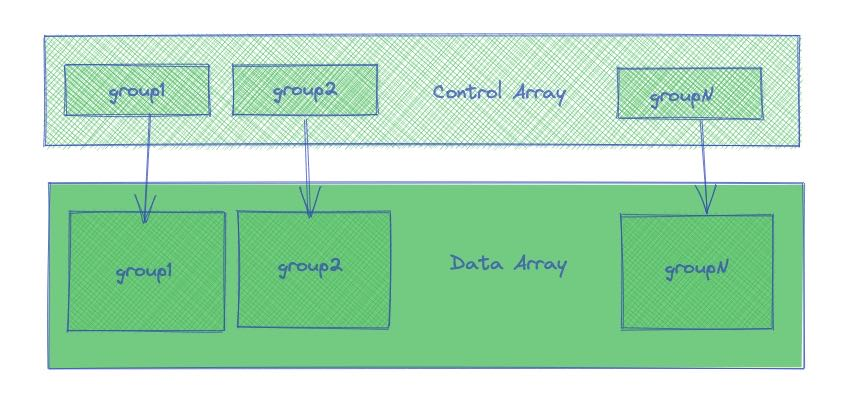
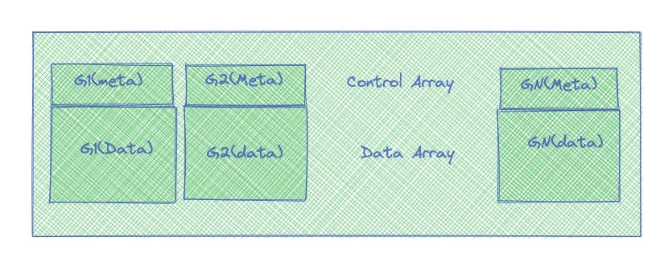
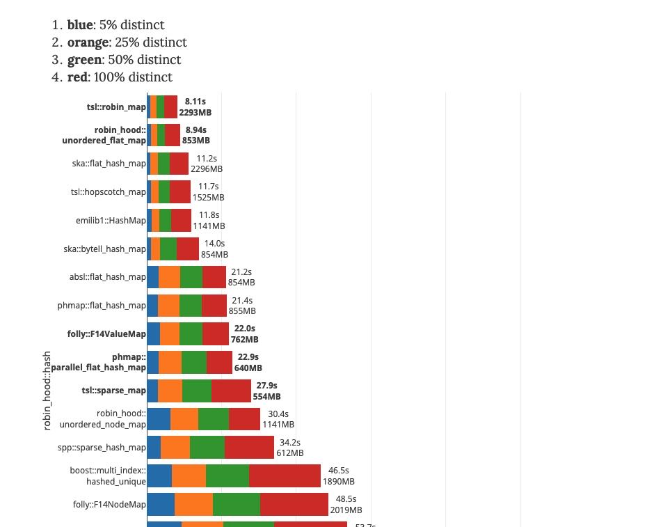
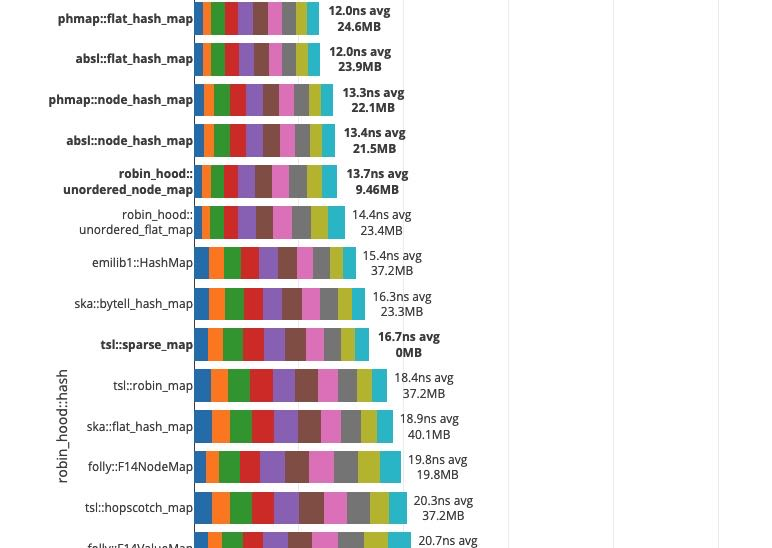
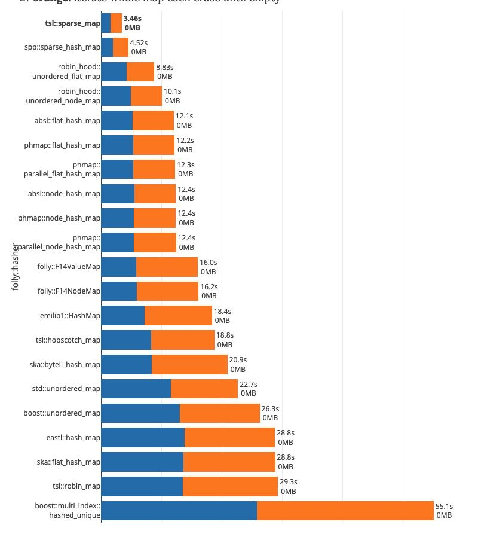

各种HashMap的性能对比
Table of Contents
https://martin.ankerl.com/2019/04/01/hashmap-benchmarks-01-overview/
- 插入性能影响到高基数的计算
- 查询性能影响到低基数的计算
- 遍历性能影响到序列化速度
- 内存开销（这方面phmap这种元信息分开存储的hashset有天然优势）
这个评测非常彻底，对于hash table选型特别有帮助 https://martin.ankerl.com/2019/04/01/hashmap-benchmarks-05-conclusion/
最后作者的建议是，可以使用phmap来做为default hashmap, 然后使用robin_hood::unordered_flat_map 来处理插入和删除场景并且保持比较低的内存使用。
不过我最后实测下来，觉得还是phmap在各方面是最平衡的，而且节省内存在高并发情况下面具有天然的优势，cache locality好并且也节省内存。
1. 两种hashtable实现差异
phmap::hashset实现
- 有control array和slot array两个部分，control array相当于存储slot array一些元信息
- 假设有N个slot, 那么control array会占用N个字节，slot array占用N*sizeof(T)字节
- control array和slot array连续存放
- find/insert之前先去control array里面根据元信息做预先匹配，只有元信息匹配了，再去对应的位置去slot array做检查是否完全匹配。
每个group对应16个元素，每个元素使用1个字节保存元信息，这样可以使用一个128bit SIMD指令来处理元信息。

ska::hashset: https://github.com/skarupke/flat_hash_map/blob/master/flat_hash_map.hpp
https://probablydance.com/2017/02/26/i-wrote-the-fastest-hashtable/ 这篇文章里面讲到了这个hashmap实现的一些关键点：
- open addressing
- linear probing（phmap::hashset使用quandratic probing）
- robin hood hashing
- prime number slots
- an upper limit on probe count(上限设置在log2(n)上，max_load_factor是0.5)
可以看到这种实现在内存使用上远远超过phmap::hashset.
CK/ska hashset实现
- 只有slot array一个部分
- 为了区分这个slot为empty/tombstone, 不同的hashset使用不同的标记方法
- CK 使用0表示empty, 对于erase操作则会使用比较复杂的方法做挪动，不过因为OLAP里面erase比较少，所以不在关键路径上
- ska hashset 则使用额外的1字节来标记，除此之外还可以用来做robinhood linear hashing
和phmap::hashset最大差别就在于，元信息是否和数据分开存储：
合并存储的好处是，如果probe chain比较短的话，那么cache locality比较好，因为直接就和最终数据所在的内存上做操作。查找之后立刻就在附近做insert data, 这个cache locality非常好。唯一要确保的就是probe chain不要太长，这个ska hash map做了限制在log(n). 超过这个数值就会resize. 而CK hashset则是根据load factor做判断。分开存储这方面就不行，首先要touch control array, 然后是slot array. 尤其是如果N比较大，并且有很多个hashset在同时做find/insert, 这个cache locality就很差。
分开存储的好处，我觉得可能是内存使用上。在寻找empty slot的时候，只需要在control array上寻找即可，而不用去看slot array. 尤其是如果probe chain很长的时候，这种方法特别具有优势，memory footprint很小。如何提高这种分开存储hashset的速度，则是一个问题。相反不断地做aggressive resize并不能加快速度，反而会减慢速度，因为这种分开存储的hashset就是比较适合这种紧凑insert速度相对慢的场景。
此外分开存储还有个好处就是遍历比较快：因为其他hashset都是通过减少load factor的方式来加快搜索速度，因为整个hashset里面势必有很多的empty slot. 这样在遍历的时候可能会触碰到许多无效的元素。而分开存储的好处是，可以在较小的数组上就确定元素在哪些位置上。
我们可以简单地做phmap::hashset做个修改，变成下面这样的结构
- 我们还是有Group这样的概念，一个group对应16个元素。
- 但是一个group里面同时包含meta和data
- 头16字节是meta信息，剩下的字节是data信息
我们还可以保留使用SIMD处理元信息的优势，同时也可以保证cache locality: 一旦touch到meta信息，那么data信息也会被载入cache, 接下来的操作就比较快。

2. 插入/搜索/查询性能
从插入性能来看 https://martin.ankerl.com/2019/04/01/hashmap-benchmarks-03-02-result-RandomDistinct2/
hash func影响不是特别大 可以看到phmap和前面几个差距很大，从14s->21s这个差距有点大。

从搜索性能来看 https://martin.ankerl.com/2019/04/01/hashmap-benchmarks-04-03-result-RandomFind_500000/
phmap性能算法非常好的，后面几个差距也不是特别大

另外遍历性能也是非常关键的，对于靠减少load factor来加快速度的hashset实现，在slot array里面势必有很多empty slot. 这样在遍历的时候就会touch到比较大的内存，虽然连续性比较好，但是在高并发下的时候估计cache locality也帮不上忙。https://martin.ankerl.com/2019/04/01/hashmap-benchmarks-04-06-result-IterateIntegers/
